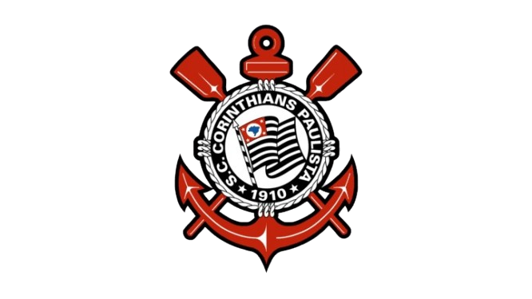

Sport Club Corinthians Paulista
O Corinthians é um time muito popular. Foi fundado por operários do Bairro do Bom Retiro, na cidade de São Paulo, no dia 1 de setembro de 1910. A ideia inicial era disputar um campeonato de várzea, já que o campeonato oficial permitia apenas a participação de times elitistas.
História do Corinthians
Em 1913, a Liga Paulista de Futebol – o campeonato oficial – permitiu o ingresso dos times de várzea na disputa do torneio. Nas décadas de 20 e 30, o Corinthians não apenas era considerado um dos grandes times locais, como também conquistou muitos títulos: em 1922, 1923, 1924, 1928, 1929, 1930, 1937, 1938 e 1939. O antigo clube de várzea conseguiu nove vitórias nessas duas décadas.
Nesse momento, o Corinthians já se estabelecia como um grande time. No entanto, a década de 40 foi um período de jejum em títulos. Já os anos 50 marcaram a volta por cima: o clube renovou o time, mesclou jogadores experientes com jogadores de base e ganhou muitos títulos, incluindo o Campeonato Paulista em 1951 e 1952, o Torneio Rio – São Paulo em 1950, 1951 e 1952, e a primeira conquista internacional do clube, a Pequena Taça do Mundo em 1953.
Após esse período de conquistas, seguiu-se mais um longo período de jejum, mesmo com Garrincha passando pelo clube e com Rivellino se tornando ídolo. No entanto, em 1977 o Corinthians voltou a conquistar o Campeonato Paulista, auxiliado pela contratação de Palhinha. Logo em seguida, o Timão contratou Sócrates e Biro-Biro, jogadores que fizeram parte de um momento histórico de todo o futebol brasileiro: a Democracia Corinthiana.
A Democracia Corinthiana foi um movimento notável onde todas as decisões referentes ao futebol profissional eram tomadas coletivamente, por votação, respeitando a vontade da maioria. Os jogadores, com Sócrates e Wladimir à frente, utilizavam inclusive estampas nas camisas com dizeres em prol da abertura política como “Diretas Já” e “Voto direto para presidente”. Esse período rendeu dois Campeonatos Paulistas: 1982 e 1983.
Infelizmente, as decisões coletivas ruíram entre 1984 e 1985, retornando ao comando tradicional. Ao mesmo tempo, os times brasileiros começavam a se espelhar no modelo de organização dos times europeus, colocando ponto final nesse momento histórico do futebol.
Títulos do Corinthians
- Campeonato Brasileiro: 1990, 1998, 1999, 2011, 2015 e 2017;
- Campeonato Paulista: 1914, 1916, 1922, 1923, 1924, 1928, 1929, 1930, 1937, 1938, 1939, 1941, 1951, 1952, 1954, 1977, 1979, 1982, 1983, 1988, 1995, 1997, 1999, 2001, 2003, 2009, 2013, 2017, 2018, 2019 e 2025;
- Copa do Brasil: 1995, 2002 e 2009;
- Copa Libertadores da América: 2012;
- Mundial Interclubes: 2000 e 2012;
- Recopa Sul-Americana: 2013;
- Torneio Rio-São Paulo: 1950, 1951, 1952;
- Pequena Taça do Mundo: 1953.
A Casa do Povo: Neo Química Arena
Localizada na zona leste de São Paulo, a Neo Química Arena é o palco dos jogos do Corinthians e um dos estádios mais modernos do Brasil. Venha conhecer sua localização:
Gols e Emoções da Fiel Torcida!
Reviva a emoção da torcida corintiana e os gols que fizeram a Fiel vibrar: